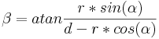
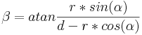

Parallax
Intro

![[*]](http://wiki.panotools.org/File:Parallax.gif){kind=link}
If you shoot the same scene from a slightly different point of view, the foreground will be shifted in relation to the background, as in this example image.
Parallax occures in panoramic photography if camera and lens are not rotated around the Entrance pupil of the lens. A difference caused by parallax will be visible in the overlap between two adjacent images.
Parallax errors are sometimes very hard to retouch, since necessary background details might be obscured by foreground details. A useful way to fix these kinds of errors is to 'invent' some background details.
Calculation
Parallax depends on
the object distance  , the displacement of the no-parallax-point
, the displacement of the no-parallax-point  and
half the rotation angle between two shots, the off axis angle
and
half the rotation angle between two shots, the off axis angle  . Then the half parallax angle
. Then the half parallax angle  will be:

will be:

Since usually is far larger than this could be abbreviated to 
applies in both images that overlap in opposite directions, hence the value must be doubled to get the actual parallax error. Now the maximum error in pixels for the ready stitched panorama can be calculated: For a 360° panorama (and in degree) this is simply 
Examples
If you shoot 4 images around, is 45°. Given an object 1m from the lens the maximum (relative to infinity) parallax error will be for a displacement of the no-parallax-point:
|
|
8000px width | 12000px width |
|---|---|---|
| 1mm | 1.8px | 2.7px |
| 5mm | 9px | 14px |
| 10mm | 18px | 27px |
| 20mm | 37px | 55px |
If you shoot 6 images around, is 30°. Given an object 2m from the lens the maximum (relative to infinity) parallax error will be for a displacement of the no-parallax-point:
|
|
8000px width | 12000px width |
|---|---|---|
| 1mm | 0.6px | 1px |
| 5mm | 3.2px | 4.8px |
| 10mm | 6.4px | 9.6px |
| 20mm | 13px | 19px |
See also
- No-parallax point
- Mending parallax errors with the shear tool[*]
- Entrance Pupil Database[*]
- Heads[*]
External Links
Max Lyon's panoramic parallax error calculator.